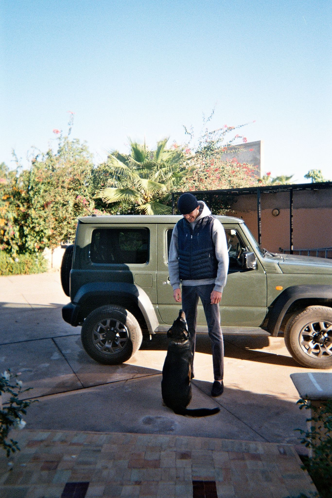

🏄🏽♂️ Hello everyone, welcome on my profile 🏄🏽♂️
I am Hugo, and here is my life:

I am french 🇫🇷. I was born on 4th May 2001 in Paris. I am the oldest in my family. My little brother is 17 years old. I lived for 18 years in Paris, now I live in Marrakech.
I am passionate about water sports. I am a French swimming champion. Whenever I have free time I like to spend my time on the water. With my little brother we do a lot of wakeboarding. Whenever I have the opportunity I go swimming at the lake. When I'm not on the water, I like everything to do with the hospitality business. Later on, I want to work in this industry. I would like to become a project manager for a large hotel/restaurant company.
I am currently completing my sixth and final semester of the bachelor program at the Ecole Hotelière de Lausanne (EHL). I am extremely eager to put the skills I’ve acquired in the past 4 years – both at EHL and during my numerous field experiences - to good use. I am confident my past employers would describe me as detail-oriented, enthusiastic and hard-working. My seriousness and ability to work alongside a team are my core values. Being able to integrate a development project/ pre-opening team would represent an amazing opportunity to truly launch my career. I like the idea of building something from scratch, of being at the origin of a project, of integrating a team from the very beginning, of investing myself in the long term. Careers Ennismore